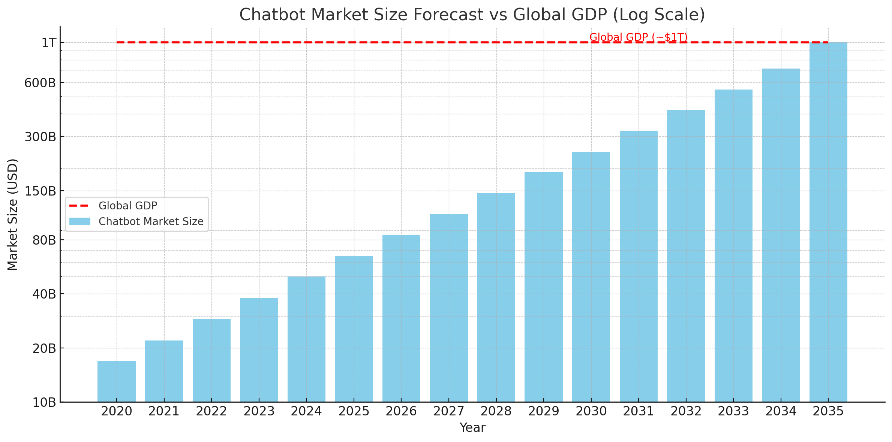

Все будет чатботом к 2035
Раньше чатботы — это был дорого и сложно. Нужны были команды инженеров (причём и обычных разработчиков, и NLP-специалистов), отдельные лингвисты, редакторы, сборщики данных. Большинство серьёзных проектов даже двигали вперёд всю лингвистическую науку — настолько много ресурсов вкладывали в исследование языков.
С голосовыми помощниками всё было ещё хуже. Если к обычному чатботу нужно было добавить голос, то расходы резко взлетали — текст надо было превращать в речь и наоборот (TTS и STT). Каждая из этих задач состоит из множества подзадач и сильно пересекается друг с другом. А коробочные решения даже на английском языке не всегда подходили по качеству и стоили очень дорого. Хотели делать сами? Готовьтесь умножить расходы минимум на три.
Из личного опыта: Однажды я потратил целый день на составление блок-схемы только одного (!) компонента голосового помощника. И таких компонентов в одном логическом движке было несколько. Это был труд десятков инженеров, занимавших целые этажи.
Сегодня ситуация радикально изменилась. Любой разработчик, прочитав одну статью на Medium, за вечер может собрать работающий прототип на бесплатных решениях. Достаточно интегрировать три готовых API для STT, генерации ответов (LLM) и TTS. Или вообще взять no-code решение, где это всё уже собрано. Да, поддерживать это и развивать не так легко, но протестировать идею за выходные — проще простого.
Качество выросло настолько, что спорить уже бессмысленно. Соревноваться с качеством голоса от ElevenLabs теперь могут только другие компании, которые целенаправленно занимаются голосовыми технологиями. Если вы хотите просто добавить голосовой интерфейс в свой продукт, лучше даже не пытаться делать это своими силами — получится хуже и дороже.
Сегодня вся логика моего чатбота помещается в одном конфиг-файле, который можно целиком увидеть на трёх экранах ноутбука. Первая рабочая версия была написана за 4 промпта, последний из которых сгенерировал ещё 10 промптов для реализации кода. Amazon когда-то писал целые статьи, описывая, как у них устроена детекция интентов, выделение сущностей и нечёткий поиск.
Прототипировать и тестировать гипотезы стало проще и дешевле. Теперь на выходных можно не просто написать идею, а сразу её реализовать и проверить на первых пользователях. Это значит, что теперь стартапы и небольшие компании получили огромное преимущество.
Встречаются и компании, которые по старинке пытаются делать всё сами. Я знаю пару таких случаев, и обычно это заканчивается потерей времени, денег и необходимости срочно пересматривать планы. Часто инженеры просто хотят за счёт компании поэкспериментировать с новыми технологиями. Подумайте дважды, прежде чем соглашаться на такой эксперимент.
Парадоксально, но иногда дорого — это дешевле. Используя облачные API и мощные общие модели, вы будете больше платить за эксплуатацию, но получите решение, которое уже прошло проверку на тысячах клиентов. Дешёвое локальное решение часто превращается в дорогое мучение с постоянными доделками и улучшениями.
Стремительный рост рынка чатботов подтверждает мои слова. Аналитика показывает, что за последние годы этот рынок взлетел в разы. Кто-то использует чатботов для поддержки, кто-то для продаж, кто-то для автоматизации внутренних процессов. Если вы этого не сделаете, конкуренты сделают быстрее вас.
При этом маркетинг и продажи стали сложнее. Личного опыта и ощущения хватит, чтобы сказать, что за последние 3–4 года привлечь внимание и эффективно продать новый чатбот стало значительно труднее. Рынок насыщен предложениями, а клиенты стали осторожнее.
Короче, внедряйте чатботов сейчас или останетесь ни с чем. Это уже не инновация, а обязательный инструмент в любом бизнесе. Кто быстрее внедрит, тот и получит преимущества.
👉 И, кстати, мы в Zirius AI как раз занимаемся чатботами. Если хотите узнать больше или попробовать нашего бота, просто зайдите сюда: ziriusai.xyz